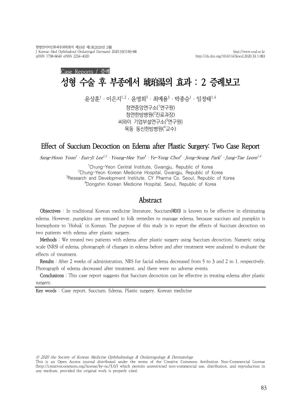

Effect of Succium Decoction on Edema after Plastic Surgery: Two Case Report
Yoon SH, Lee EJ, Yun YH, Choi YY, Park JS, Leem JT
The Journal of Korean Medicine Ophthalmology and Otolaryngology and Dermatology 33(1):83-88

첫 장 · 오픈액세스First page · open access
논문 소개Summary
성형 수술 뒤의 부종은 피할 수 없는 일이지만 정도가 사람마다 크게 다르고, 미용을 목적으로 한 수술에서는 결과에 영향을 주므로 환자와 의사 모두 불안해합니다. 부종을 줄이려고 스테로이드인 덱사메타손을 주로 쓰는데, 짧게 써도 전해질 이상과 고혈압, 고혈당, 췌장염이 나타날 수 있고 길게 쓰면 골다공증과 무균성 관절 괴사, 부신 기능 부전, 고지혈증이 따릅니다.
이 증례보고는 성형 수술 뒤 부종이 있는 두 사람에게 호박탕을 투여한 기록입니다. 호박(琥珀)은 한의학 문헌에서 부종을 없애는 데 쓰인다고 되어 있습니다. 그런데 우리말로 소리가 같다는 이유로 민간에서는 호박(pumpkin)을 부종에 잘못 쓰는 일이 흔합니다. 저자들이 논문 첫머리에서 이 혼동을 짚은 이유가 여기에 있습니다.
두 사람은 처음부터 부종의 정도가 달랐습니다. 한 사람은 숫자평가척도 5점, 다른 한 사람은 2점이었습니다. 두 사람 모두 2주 복용 뒤 각각 3점과 1점으로 내려갔습니다. 치료 전후 사진에서도 부종이 줄었고 이상반응은 없었습니다.
한계는 분명합니다. 두 사람의 증례이고 대조군이 없으며, 수술 뒤 부종은 시간이 지나면 저절로 가라앉는 경과를 밟습니다. 2주라는 관찰 기간은 그 자연 경과와 겹칩니다. 부종의 정도를 환자가 스스로 매기는 척도와 사진으로만 잰 것도 한계입니다.
그럼에도 이 기록이 남기는 것이 하나 있습니다. 소리가 같아 생기는 혼동은 임상에서 실제로 사람을 잘못 이끕니다. 호박탕의 호박은 나무 진이 굳어 만들어진 광물성 약재이지 채소가 아닙니다. 저자들이 증례보다 이 구분을 앞세운 것은 잘못 쓰이는 일이 그만큼 흔하다는 뜻입니다.
Postoperative oedema is unavoidable after facial cosmetic surgery, but its degree varies widely between patients, and because it bears on the result of an operation done for appearance it unsettles patient and surgeon alike. Dexamethasone, a steroid, is the usual answer; used briefly it can produce electrolyte disturbance, hypertension, hyperglycaemia and pancreatitis, and used long-term it brings osteoporosis, aseptic joint necrosis, adrenal insufficiency and hyperlipidaemia.
This report records two patients given Succinum decoction for oedema after plastic surgery. Succinum — amber — is described in the Korean medical literature as effective at eliminating oedema. But because succinum and pumpkin are homophones in Korean, folk practice commonly misuses pumpkin for the same purpose. That is why the authors open the paper with the confusion.
After two weeks of administration the numeric rating scale for facial oedema fell from 5 to 3 in one patient and from 2 to 1 in the other. Photographs before and after showed the oedema reduced, and there were no adverse events.
The limitations are plain: two cases, no control group, and postoperative oedema that settles of its own accord with time. Two weeks of observation overlaps that natural course. Measuring the oedema only by a patient-rated scale and photographs is a further limitation.
One thing does remain. A confusion born of two words sounding alike misleads people in actual practice. The succinum in this decoction is a mineral medicinal formed from hardened tree resin, not a vegetable. That the authors put the distinction before the cases suggests how often the mistake is made.
인용Cite
Yoon SH, Lee EJ, Yun YH, Choi YY, Park JS, Leem JT. Effect of Succium Decoction on Edema after Plastic Surgery: Two Case Report. The Journal of Korean Medicine Ophthalmology and Otolaryngology and Dermatology. 2020;33(1):83-88. doi:10.6114/jkood.2020.33.1.083